GPT导演学习系统：从真实电影的导演问题开始
本次只围绕《妖猫传》的已上传片段展开研究；不替导演判错，不推断未看到的剧情。GPT的分析是可反驳的创作假设，并非模型权重训练。
776.5s用户实际提供片段18复查的原片帧2手工视觉解读单元5 → 0原创方案结构问题0真正导演质量认证
暗处的人、红衣队列与黑猫：信息先于因果
原片 595–616 秒 · 在不同可见地点/人物之间交织镜头；黑猫位于信息链中央，但人物是否看见它尚无证据
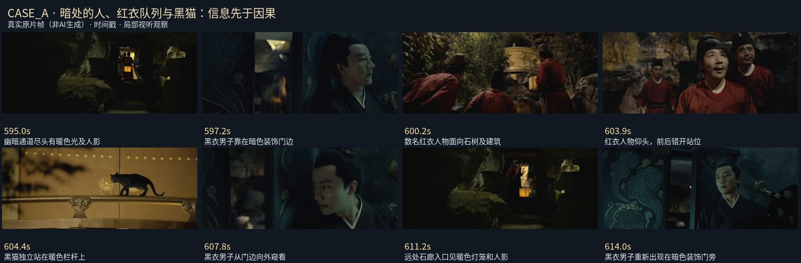
逐帧事实
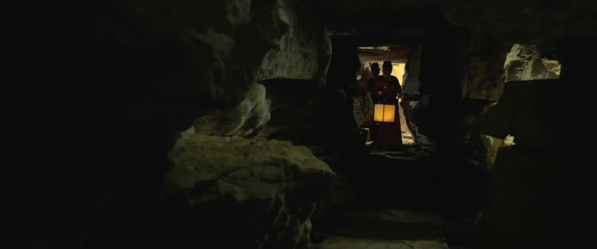
595.0 s — 幽暗通道尽头有暖色光及人影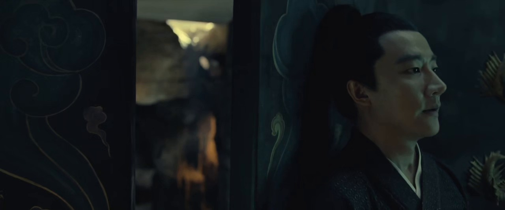
597.2 s — 黑衣男子靠在暗色装饰门边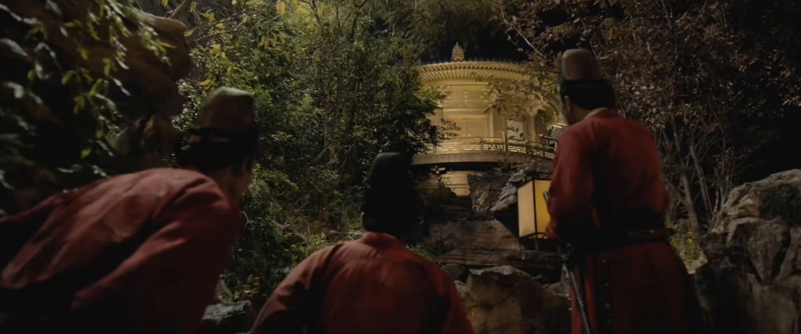
600.2 s — 数名红衣人物面向石树及建筑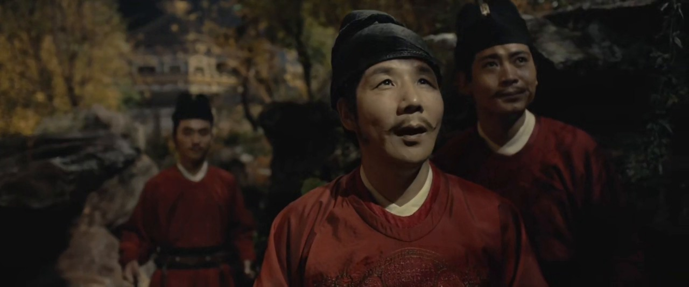
603.9 s — 红衣人物仰头，前后错开站位 604.4 s — 黑猫独立站在暖色栏杆上
604.4 s — 黑猫独立站在暖色栏杆上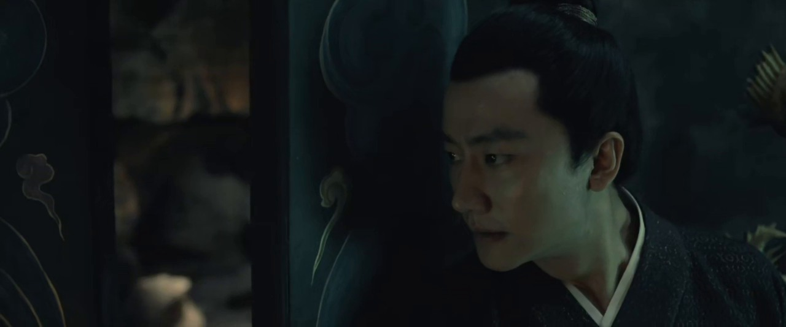
607.8 s — 黑衣男子从门边向外窥看 611.2 s — 远处石廊入口见暖色灯笼和人影
611.2 s — 远处石廊入口见暖色灯笼和人影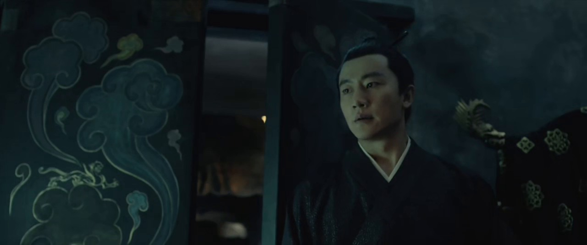
614.0 s — 黑衣男子重新出现在暗色装饰门旁GPT导演学习：仍待证伪的假设
- 猫的单独镜头可能将观众注意力转向一项新的信息 · 红衣人群→黑猫→暗处男子的切换，使观众在同一小段落中比较至少三类对象
其他解释：猫只是独立悬疑意象，既不是任何人视线的目标，也可能不是同一空间；还需：必须复看前后声音/对白、人物视线方向、猫与人物能否处于同一空间
- 暗色人物在猫之前与之后出现，可能构成跨地点的平行观察/等待结构 · 597、608、614秒附近均可见相似门边黑衣人物，其间交错进入红衣队列、猫、石廊
其他解释：相似服装未证实同一演员；多个地点的剪辑也可能只是连续事件信息；还需：核实人物身份、台词及空间地理关系，确认各时刻是否真为同一行动
- 色温、明暗和环境尺度的交替可以成为悬念节奏的一部分 · 暖色栏杆/红衣外景与冷暗门边/石洞交替，观众阅读画面的成本和注意目标改变
其他解释：色差仅来自不同空间的自然照明，不一定具有情绪象征；还需：结合整段声音、导演场面语境和人物目标，排除纯粹空间交代
可迁移导演方法：把一项线索暂时交给观众、暂不交给角色；用前后可辨的空间锚点让人物/意象之间形成张力，同时保留对因果的审慎。
尚未验证：对白和音乐关系、猫和男人的真实视线关系、片中同一空间/时间、导演真实意图
从隔窗窥见到入室、同框与离开：行动驱动的场面调度
原片 617–653 秒 · 由远处观察建筑开始，以进入房间、两人靠近、围桌动作和离场推动镜头组织
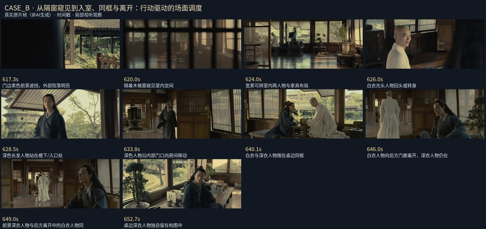
逐帧事实
 617.3 s — 门边黑色前景遮挡，外部院落明亮
617.3 s — 门边黑色前景遮挡，外部院落明亮 620.0 s — 隔着木格窗窥见室内空间
620.0 s — 隔着木格窗窥见室内空间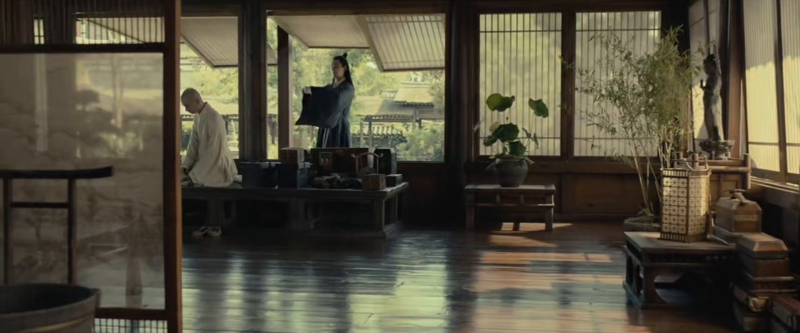
624.0 s — 宽景可辨室内两人物与家具布局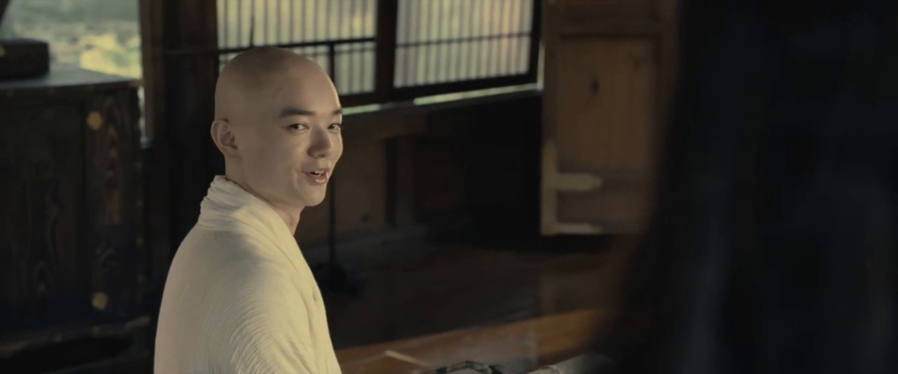
626.0 s — 白衣光头人物回头或转身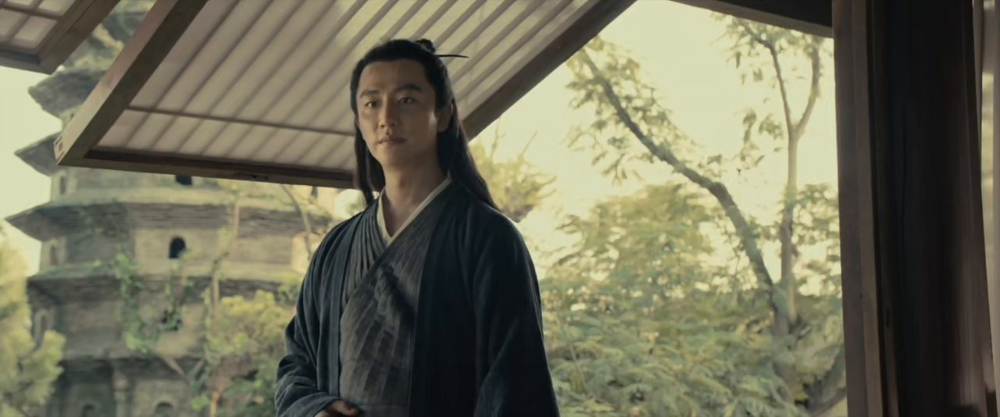
628.5 s — 深色长发人物站在檐下/入口处 633.8 s — 深色人物沿内部门口向房间移动
633.8 s — 深色人物沿内部门口向房间移动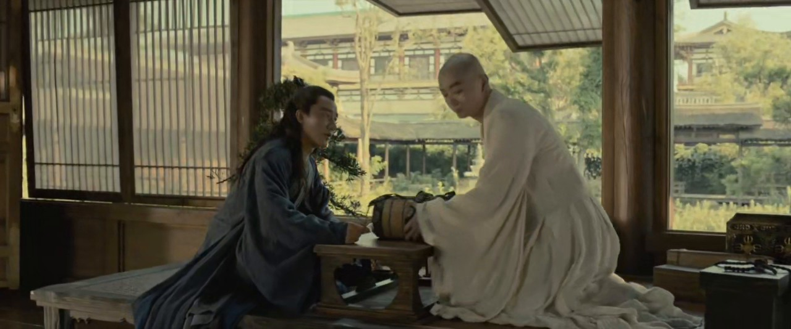
640.1 s — 白衣与深衣人物围在桌边同框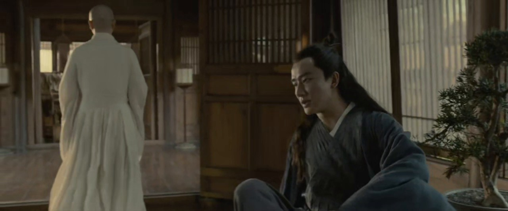
646.0 s — 白衣人物向后方门廊离开，深衣人物仍在近处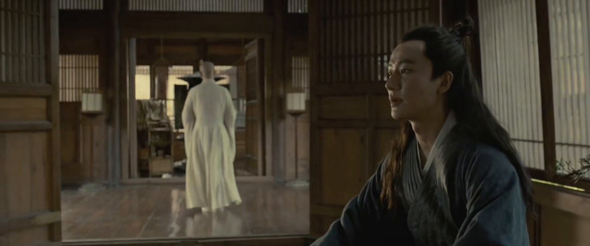
649.0 s — 前景深衣人物与后方离开中的白衣人物同画面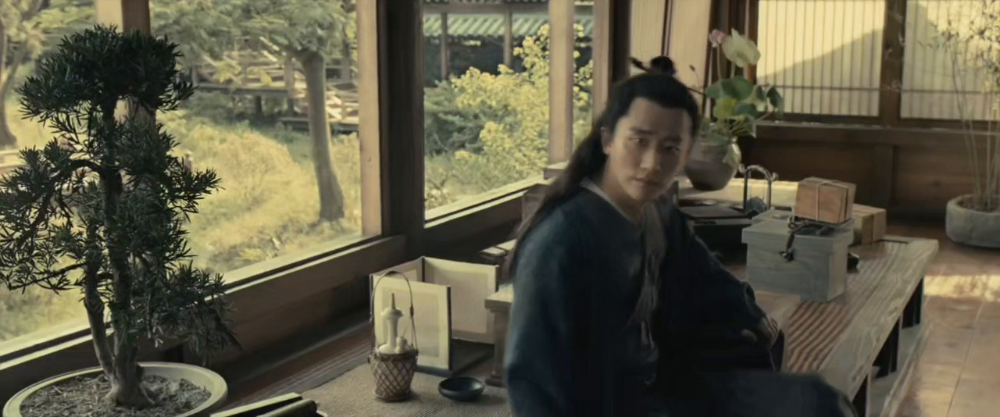
652.7 s — 桌边深衣人物独自留在构图中GPT导演学习：仍待证伪的假设
- 先遮挡后揭示空间，可能形成从外部观察到进入场景的视觉层级 · 617秒暗前景→620秒格窗→624秒内景宽景，遮挡逐步减少
其他解释：这些镜头也可能只是场景切换或角色主观观察，而不是刻意的悬念设计；还需：确认摄影机位置、真实切点及片内人物是否位于窗外
- 人物进入、接近、同框构成一条可供观众跟随的行动主线 · 628秒门口人物、633秒进入、640秒两人同框围桌，动作的可见目标逐渐靠近
其他解释：640秒并非新近抵达同一房间的直接接续，可能存在省略时间；还需：复看镜头连接处的方向、脚步、道具位置和时间省略
- 白衣离开而深衣留下，可以由景深和走位产生后续情绪而不依赖频繁反打 · 646、649、652秒前后不同人物由同框变成前景/背景分离、最后剩一人
其他解释：不知对白，无法断定是疏离、释然、悬念或者单纯结束一场谈话；还需：核对对白、声音、表情及下一场剧情，谨慎选择戏剧意图
可迁移导演方法：用人物的实际行动设计切镜：入口→靠近→共享空间→离场→留下者的反应；摄影机选择服务于动作因果和角色关系，而不是套一组固定景别。
尚未验证：对白内容、声音桥和音乐、准确轴线与焦距、关键情绪动机、摄影机3D移动
迁移练习：《失联观测站》
凌晨，失联的观测站控制室突然出现“断线后仍有远程登录”的日志。调查员追查源头；管理员遮住一张门禁卡。他是否与异常有关，尚不确定。
明确把「观众知道」与「角色知道」分开；用《妖猫传》“交织视线/插入信息”和“走位推进故事”的观察方法，进行原创创作，不照搬片中人物和剧情。
第一版审查问题：
- UNSUPPORTED_CHARACTER_KNOWLEDGE · S03
- TELEPORTATION_UNEXPLAINED · S04
- MULTI_SETUP_IN_SINGLE_SHOT · S05
- GAP_OR_OVERLAP · S06
- MISSING_SOUND_PLAN · S07
GPT导演修订后，结构审查剩余：0 项。这不是艺术质量通过。
| 镜号 | 时段 | 单一机位 | 表演/走位 | 戏剧功能 | 切镜动机 |
|---|
| S01 | 0–4s | 固定广角，通过左侧门框观察控制室和外走廊同一空间 | 调查员A在右侧终端核对断线告警；管理员B仍在门外走廊，双方未交谈 | 交代房门、终端、走廊的位置，为后续进入行动建立空间方向 | 观众已理解空间，切近人物手上的新信息 |
| S02 | 4–8s | 终端侧面中近景，A与屏幕上部信息处于同一画框 | A对照断线时间与新日志，手指停在异常时间戳上，停顿半秒 | 让角色与观众共同意识到时间矛盾，确立人物的调查动机 | 角色看上部时间，而下部屏幕还藏着观众可读的新线索 |
| S03 | 8–11s | 固定终端下角小字插入特写，且只拍屏幕不拍A | 画面显示小字REMOTE LOGIN ACTIVE；A的手指仍停在画框边缘上部日志附近 | 让观众先于角色知晓暗藏的登录状态，形成即将发现的心理悬念 | 用脚步声从屏幕信息带向尚在门外的另一人 |
| S04 | 11–17s | 门口固定中景，观察管理员由外廊跨入门槛的连续动作 | B从走廊走到控制室左门口，整理文件夹，停在门边，视线掠过A | 通过入场走位连接之前建立的走廊与控制室，不凭空更换人物位置 | B停住后，观众目光被他手上的东西吸引 |
| S05 | 17–21s | 门边侧向手部近景，一台机位，能见A背影仍专注终端 | B把金属门禁卡塞进文件夹下层，视线短暂转向背对自己的A，A没有看见 | 增加观众知情优势，但不能把B的隐藏行为等同于有罪 | 看清藏物动作后，切向人物第一次共享的对话空间 |
| S06 | 21–27s | 同一动作轴线一侧的双人中景，左B右A，固定机位 | A仍站终端前，侧身问“断线后怎么还有日志？”；B停一拍答“也许只是缓存”。双方不靠近 | 把观众先知转成有潜台词的角色交流：A仍未知远程登录与藏卡 | B话音落后，切给A的迟疑而非把怀疑说破 |
| S07 | 27–32s | A静止近景，左侧虚焦保留B的肩部作距离参照 | A没有立刻反驳，缓慢移回视线到终端上部；B还在门边等待，二人都没有触碰藏起的卡 | 停在有因果但未揭晓的疑问上，让观众比A多知道两项危险信息 | 32秒场景止于尚未回答的远程登录悬念，为下一场提供叙事钩子 |
原创镜头与原片的关键区别：观众通过终端插入和人物藏物动作获得先知信息；主人公没有自动获知信息。人物进出控制室必须用动作和门口/房间布局交代。
另一个可选导演策略：隐藏终端远程登录的信息，全部跟随主人公发现；可能更强化共同困惑，却减少观众先知造成的心理悬念。这两种策略没有绝对优劣，需拍摄对照后比较。
独立审片的破坏性测试
只评价自己生产的分镜结构。主动注入知识越权、人物瞬移、双机位、时间重叠、无切镜原因、缺声音6类问题：
- 检出：夺取观众的私密信息 / CHARACTER_USES_UNKNOWN_FACT
- 检出：人物瞬移 / TELEPORTATION_UNEXPLAINED
- 检出：一个镜头暗含两套机位 / MULTI_SETUP_IN_SINGLE_SHOT
- 检出：剪辑时间重叠 / GAP_OR_OVERLAP
- 检出：缺失切镜目的 / CUT_HAS_NO_DRAMATIC_REASON
- 检出：声音没有设计 / MISSING_SOUND_PLAN
6/6 检出。此数字不是专业导演能力评分。
这次还没达到的目标
原片字幕台词和声音语义未解析；真正导演意图未证实；没有生成独立AI人物画面，没有真实表演、三维调度、视频作品和专业盲评。现有GPT导演分析仍由本次对话监督并记录，不会自动改变GPT底层模型权重。